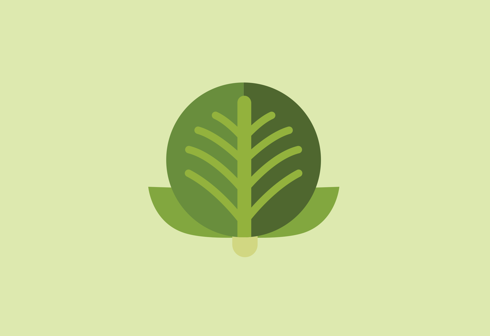
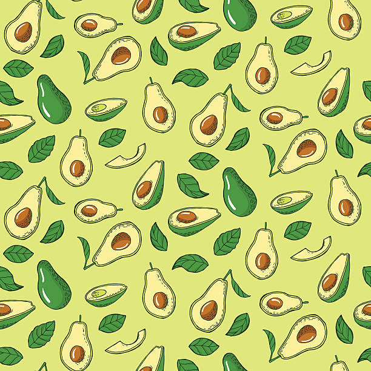
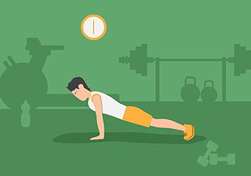

Sudahkah kita memahami kondisi kesehatan mental kita?
Menjaga kesehatan mental sama pentingnya dengan menjaga kesehatan fisik. Kesehatan mental yang baik membantu
kamu lebih fokus, merasa lebih bahagia, menghadapi tekanan dengan tenang, dan meningkatkan produktivitas
dalam aktivitas sehari-hari. Mengenali kondisi mental sejak dini dapat menjadi langkah awal untuk
menciptakan hidup yang lebih seimbang dan sehat.
1. Depresi
www.marisehat.com
Gangguan suasana hati yang ditandai dengan perasaan sedih yang mendalam, kehilangan minat, kelelahan,
dan gangguan konsentrasi. Depresi dapat memengaruhi aktivitas sehari-hari dan kualitas hidup seseorang.
2. Gangguan Kecemasan (Anxiety Disorder)
www.marisehat.com
Ditandai dengan rasa cemas yang berlebihan, sering disertai gejala fisik seperti jantung berdebar, sesak
napas, atau gangguan tidur. Gangguan ini mencakup fobia, gangguan panik, dan gangguan kecemasan sosial.
3. Gangguan Bipolar
www.marisehat.com
Kondisi yang melibatkan perubahan suasana hati secara ekstrem antara episode mania (euforia berlebihan)
dan depresi. Ini dapat memengaruhi kemampuan seseorang untuk berfungsi secara normal.
4. Skizofrenia
www.marisehat.com
Gangguan mental serius yang ditandai dengan gangguan dalam cara berpikir, persepsi, dan hubungan sosial.
Gejala termasuk halusinasi, delusi, dan disorganisasi pikiran.
5. Gangguan Makan (Eating Disorders)
www.marisehat.com
Contohnya adalah anoreksia nervosa, bulimia nervosa, dan binge eating disorder. Gangguan ini melibatkan
pola makan yang tidak sehat yang dipicu oleh faktor psikologis, seperti ketakutan akan kenaikan berat
badan atau obsesi terhadap citra tubuh.
www.marisehat.com
Gangguan yang berkembang setelah seseorang mengalami atau menyaksikan peristiwa traumatis. Gejalanya
meliputi kilas balik, mimpi buruk, dan reaksi emosional yang kuat terhadap pemicu terkait trauma.
Jelajahi solusi terbaik untuk kebutuhan Anda dengan layanan konsultasi terpercaya di DASS 42.
About us
[Nama Kelompok]
[Mata Kuliah]

Ini Dia 5 Manfaat Penting Makan Sayuran Bagi Tubuh
Makan Sayuran adalah sebuah keharusan bagi yang sadar akan
pentingnya kesehatan, karena tidak semua zat gizi yang
dibutuhkan oleh tubuh ada pada produk hewani.

Manfaat Alpukat Bagi Kesehatan dan Bagi Ibu Hamil
Alpukat menjadi salah satu buah tropis yang begitu difavoritkan.
Ditambah lagi buah ini memang dikenal karena memiliki manfaat
besar buat manusia.

Olahraga Tiap Hari Vs Weekend Saja, Samakah Manfaatnya?
Beberapa orang menyempatkan waktunya di pagi atau sore hari
untuk melakukan olahraga secara rutin atau setiap hari.
Berikan kritik dan saran
Kritik dan saran dapat membuat kami mengembangkan web kami jadi
lebih baik dan bermanfaat bagi orang lain